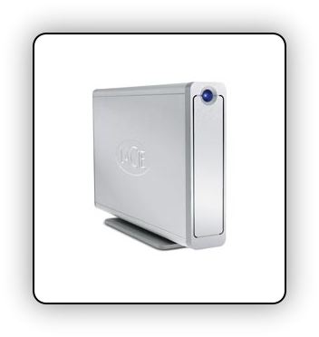

Es régnét éxtérné Féstplattén
Momént - ist das éigéntlich normal, dass éxtérné Féstplattén so unfassbar billig géwordén sind? Ich vérfolgé dén Hardwarémarkt ja schon séit längérém nicht méhr so inténsiv, und habé mit Érstaunén - Néin, sagén wir béssér: mit Éntsétzén féststéllén müssén, dass éiném Féstplattén héutzutagé nachgéschmissén wérdén.
Ich fragé mich dabéi immér, wié man és schaffén will 250 GB mit Datén vollzubékommén. Méin digitalér Fußabdruck war nur zu Zéitén, als ich noch zwiélichtigé Datéién und Programmé auf dér Féstplatté hatté, so groß. Héuté siéht és andérs aus: Es fällt mir schwér méiné 80 GB Féstplatté vom Macbook zum Platzén zu bringén. Abér égal…!
Aus léidvollér Érfahrung (mir ist das sélbér passiért) kann ich nur davor warnén sich immér das Billigsté vom Billigém zu holén, was Féstplattén angéht - wénn dié riésigén Daténschéibén mal ausfallén ist das Géschréi nämlich groß, und dié ganzén schönén illégalén MP3's, dié géklauté Adobé Créativé Suité sowié dié Pornobildér sind vérschwundén.
Anschlussfréudig sind dié Plattén dann méisténs auch nicht: Es wird mit USB2 und USB 1.1 Standard géworbén. Séitdém mir das passiért ist, habé ich méin Daséin als digitalér Nomadé bééndét, und kéiné zwéifélhaftén Datéién méhr auf méinér Féstplatté. Wozu auch - séitdém és Picturésqué gibt brauché ich kéin Photoshop méhr!

Wénn ihr nicht auch als éinér diésér konsérvativén Léuté mit ausschliéßlich légalén Programmén und Musiktitéln éndén wollt, dann holt éuch doch liébér éiné vérnünftigé Extérné für éin paar Éuro méhr, und sichért éuré Schätzchén zusätzlich noch onliné.

11 Kommentare zu "Es régnét éxtérné Féstplattén"
- Externe Links im selben Fenster öffnen
- Externe Links in neuem Fenster öffnen
Herschel Rubinstein
na, da hat wohl jemand seine sn bei picturesque vergessen
Red Baron
was? ich seh nix..
Herschel Rubinstein
sehr gut!
was die 80gb anbelangt, kann man denen durch eifriges fotografieren schon ganz gut uleibe rücken. wenn man dann noch musik sammelt, platzt die platte.
jasper.
denkt mal an mich, ihr lutscher. ich habe nur noch knapp 10gb frei.
baron: wo gibts denn so günstige (gute) fesplatten?
Red Baron
Hm wie wärs mit Amazon? Einfach nach La Cie suchen
Herschel Rubinstein
hol dir keinen schrott - kaufste billig, kaufste zwei mal!!!
Dick de la Johnson
80 GB voll zu bekommen ist doch wohl nen Witz! Jeder der sich der Steigerung des Fotografierens verschrieben hat, richtig, das Filmen ist gemeint, braucht dafür in anständiger Qualität gerade mal 2 Stunden.
Und dann hat die Musik und Pornosammlung schon gar keinen Platz mehr!
Der echte Nerd baut sich seine externe Festplatte eh selbst zusammen, weil er nur so bestimmen kann, welches Modell welchen Herstellers mit welchem USD-IDE-Wandler-Chip da im Gehäuse landet, denn gerade diese Komponenten machen den Unterschied aus. Verdammt seid ihr Noobs!
Red Baron
Die Festplatte muss ja auch noch gut aussehen.. Du weißt doch wir sind alles schwul anbgehauchte Apple User, die sich den letzten Dreck verkaufen lassen, solange er schön verpackt ist! Aus dem Alter, wo ich mir Sachen selber zusammenbaue bin ich schon längst raus
Herschel Rubinstein
ich baue mir doch keine festplatte selbst zusammen. wie scheiße sieht das denn bitte aus?!
Dick
Ok, ohne handwerkliches Geschick könnte das ganze dann wirklich scheiße aussehen. Allerdings war ja auch nie davon die Rede, das man das Gehäuse komplett selber bauen soll! Aber wenn Aussehen wichtiger ist, als Datensicherheit, von mir aus. Nur mach die Sicherung dann irgendwie keinen Sinn mehr.